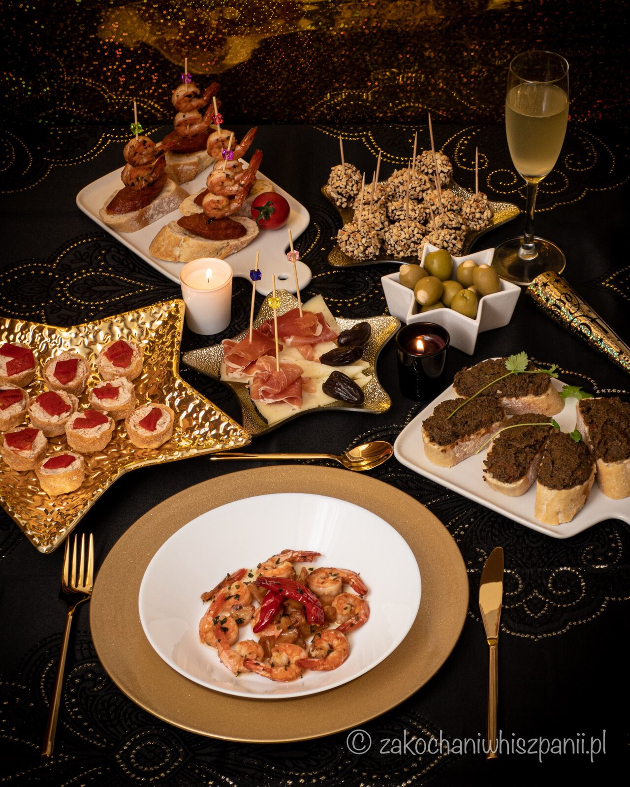
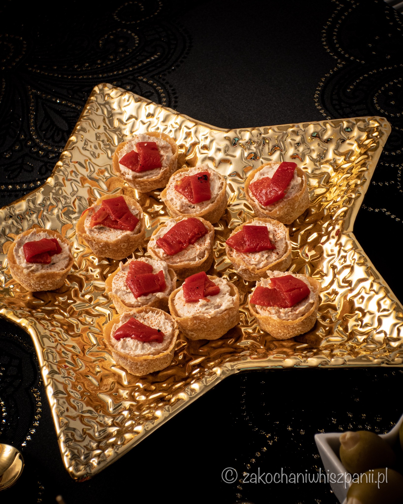
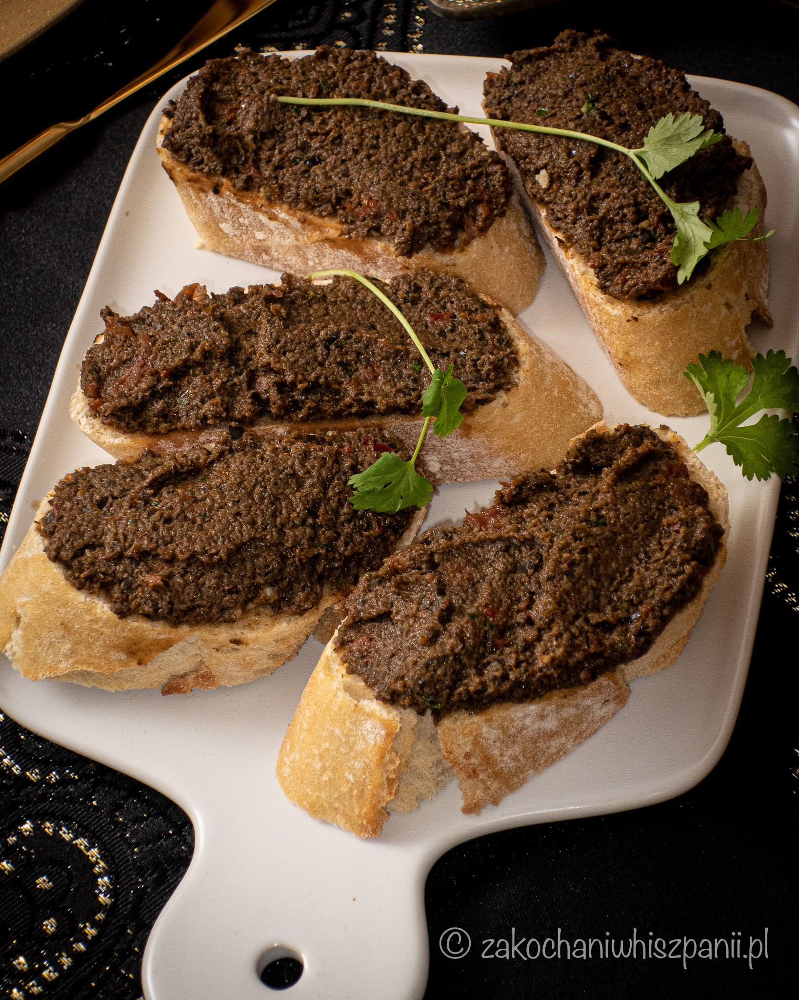
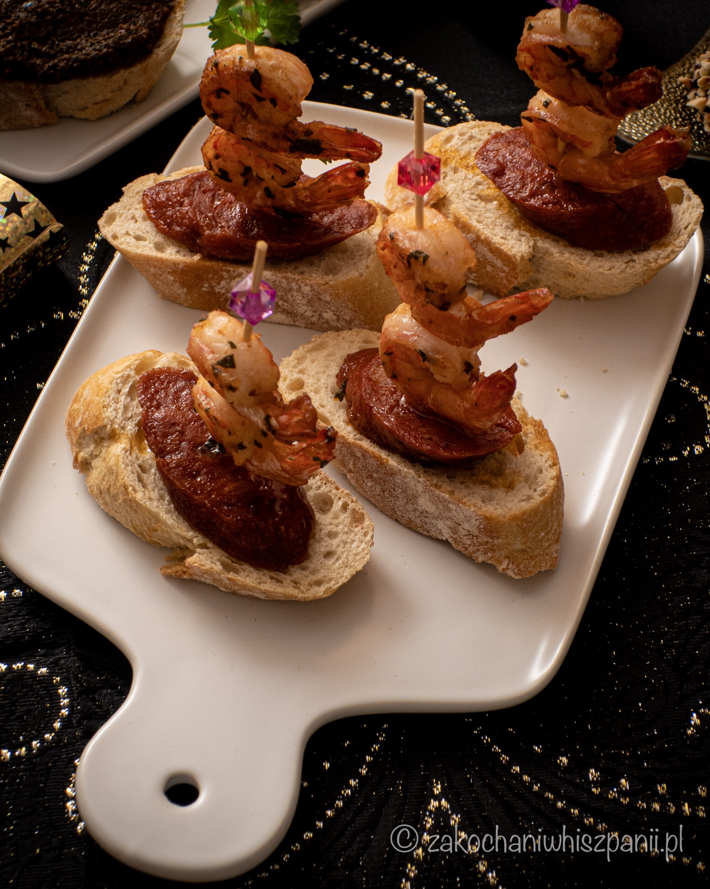
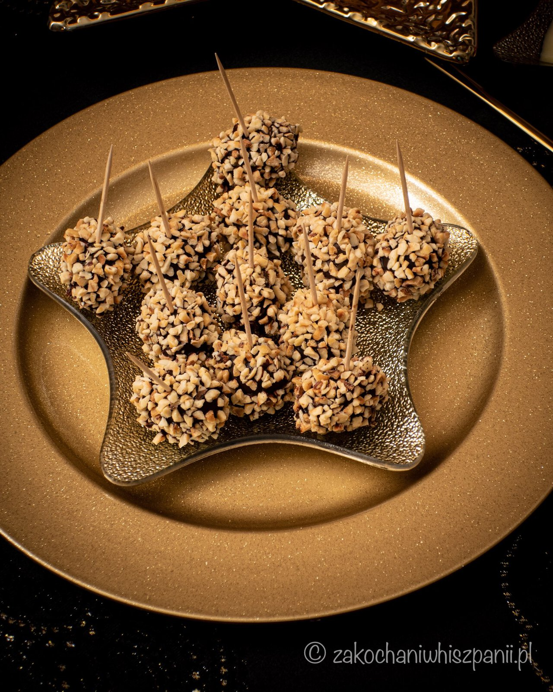
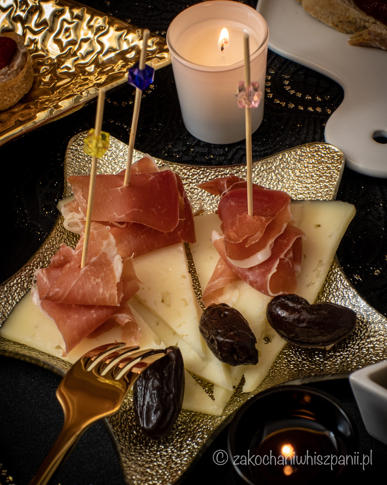
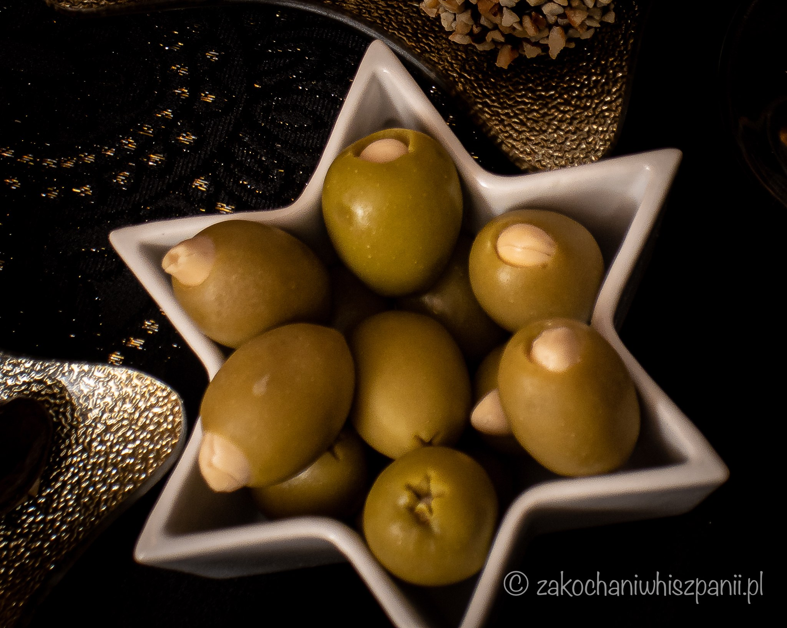

Menu Sylwestrowe 2020
Przed nami koniec grudnia. Jak co roku o tej porze, część z nas już miała plan na spędzenie nocy sylwestrowej: na balu, w górach, nad morzem lub za granicą. W tym roku przez pandemię koronawirusa jest zupełnie inaczej. Dużo ograniczeń nie pomaga nam w zorganizowaniu sylwestra w większym gronie. Dlatego my w tym roku stawiamy na domówkę. Chętnie przedstawimy Wam pomysły na zorganizowanie szampańskiej nocy sylwestrowej dla dwóch osób w stylu hiszpańskim. Gwarantujemy szybkość wykonania naszych sylwestrowych tapas'ów. Niemal wszystkie składniki oprócz babeczek są dostępne m.in. w sklepach Lidl. Do noworocznego toastu proponujemy kieliszek hiszpańskiej Cavy.

Mamy nadzieję, że skorzystacie z naszych pomysłów. Już teraz życzymy Wam szczęśliwego 2021 roku!!! Próspero Año Nuevo!!!
Babeczki z pastą tuńczykową

Składniki
- 1 puszka tuńczyka w oliwie z oliwek (195g z zalewą / 150g po odsączeniu)
- 1 opakowanie (135g) serka typu philadelphia np. piątnica
- ½ opakowania mini tartaletek/babeczek wytrawnych (nasze KRUSTADER ze sklepu Ikea)
- sól, pieprz do smaku
- 1 łyżeczka oliwy (może być z opakowania po tuńczyku)
- szczypta papryki wędzonej, najlepiej hiszpańskiej pimentón
- 4 kawałki papryki piquillo
Przygotowanie
Tuńczyka przekładamy z puszki do miseczki. Następnie dodajemy całą zawartość opakowania serka śmietankowego. Dodajemy sól i pieprz wg. uznania oraz jedną łyżeczkę oliwy. Całość blendujemy. Powstałą pastę, przekładamy do mini tartaletek. Mini babeczki posypujemy szczyptą wędzonej papryki w proszku. Dalej kroimy paprykę piquillo na małe cząsteczki i dekorujemy.
Bagietka z tapenadą naszego pomysłu

Składniki
- 1 słoik (160 g po odsączeniu) czarnych oliwek bez pestek
- pół bagietki
- 1 ząbek czosnku
- 3 łyżki oliwy z oliwek
- 6 suszonych pomidorów
- 2 łyżki natki pietruszki
- 1 łyżka kolendry
- 3 plasterki jalapeño
Przygotowanie
Ząbek czosnku obieramy, przekładamy do naczynia, w którym będziemy blendować wszystkie składniki. Następnie dodajemy oliwki, suszone pomidory, pietruszkę, kolendrę oraz plasterki jalapeño. Wszystkie składniki blendujemy na gładką masę. Na koniec, jeśli istnieje potrzeba, dodajemy odrobinę soli i pieprzu wg. uznania. Powstałą tapenadę przekładamy na pokrojone kawałki bagietki.
Gambas al ajillo

Składniki
- 150 g krewetek, mogą być mrożone
- 4 ząbki czosnku
- 2 sztuki papryczki ostrej
- oliwa
- pół bagietki
- przyprawy: sól, pieprz
- 1 mały kieliszek brandy
Opcjonalnie
- łyżka masła
- natka pietruszki
Przygotowanie
Krewetki wyciągamy z opakowania przed gotowaniem i rozmrażamy (oczywiście, jeśli kupiliśmy mrożone) :) Następnie czosnek obieramy i kroimy w talarki. Paprykę kroimy na pół, odcinamy górną część, można usunąć nasionka. Natkę pietruszki, dokładnie myjemy, osuszamy i kroimy drobno.
Na patelni rozgrzewamy oliwę i dodajemy wcześniej pokrojony czosnek i paprykę. Oliwa nie może być zbyt gorąca, żeby czosnek się nie spalił! Doprawiamy nieco solą i pieprzem. Podsmażamy na małym ogniu na lekko złocisty kolor. Zwiększamy nieco ogień i dorzucamy krewetki, które smażymy po 2-3 minuty z obu stron. Dodajemy brandy i czekamy, aż alkohol odparuje. Na koniec, można dodać łyżkę masła i dorzucić pokrojoną natkę pietruszki.
Bagietkę kroimy na małe kromeczki. Możemy je wcześniej podgrzać w piekarniku bądź na patelni, w której zakończyło się smażenie krewetek. Gotowe krewetki podajemy na talerzu wraz z kawałkami czosnku i bagietką.
Pinchos z chorizo i krewetkami

Składniki
- 150 g krewetek
- 4 ząbki czosnku
- 2 szt. ostrej papryczki
- 4 grubsze plastry chorizo
- 3 łyżki oliwy
- pół bagietki
- 4 długie wykałaczki
Przygotowanie
Rozmrożone i osuszone krewetki smażymy na rozgrzanej oliwie ze szczyptą soli i pieprzu po 3-4 minuty z obu stron lub przygotowujemy wg. przepisu gambas al ajillo. Plasterki chorizo podsmażamy z obu stron na oliwie z oliwek. Bagietkę kroimy na mniejsze kromeczki. Następnie na bagietkę układamy chorizo, dalej 2 krewetki, w całość wbijamy wykałaczkę. Proces ten powtarzamy.
12 winogron

Składniki
- 12 sztuk białych winogron
- 125g czekolady deserowej
- 80g orzechów np. laskowych posiekanych
- 12 wykałaczek
Przygotowanie
Winogrona myjemy i suszymy. Następnie w kąpieli wodnej (hiszp. baño de María), rozpuszczamy czekoladę. Każdą sztukę winogrona nabijamy na wykałaczkę i wkładamy do płynnej czekolady. Następnie obtaczamy w posiekanych orzechach.
Mini tapas

Składniki
- ulubiony kawałek sera hiszpańskiego np. queso manchego
- kilka plastrów hiszpańskiej szynki dojrzewającej np. jamón iberico lub jamón serrano
- wykałaczki
- odrobina dobrej oliwy np. arbequina lub picual
Przygotowanie
Ser kroimy w trójkąty lub dowolny kształt. Na ser kładziemy kawałek szynki i wbijamy wykałaczkę. Skrapiamy oliwą do smaku.
Oliwki z migdałami

Składniki
- 1 słoiczek dobrych oliwek np. gordal nadziewanych migdałami
- wykałaczki
Przygotowanie
Oliwki przekładamy do małej miseczki. Wbijamy wykałaczki i gotowe.
Najnowsze wpisy


Tagi